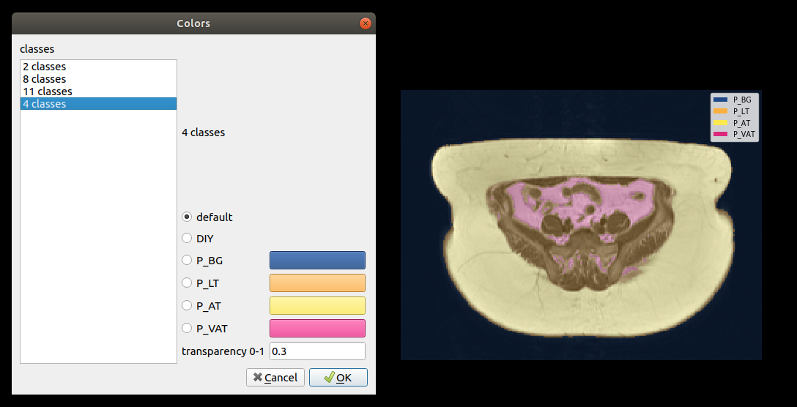

There are several regular operations for have a better look at images.
- Set layout
If you want view several images at the same time, you can click the button Set Layout, then you can select how many grids you will like to show. When you click the first grid at the left top corner, it will be remain/change to show one layout; If you select several continuous grids, the layout will be shown in the same way; But if you select any other single grid other than the first one, it will be ignored.
Figure:
Set Result Color
|
 |
- Switch 2D/3D
If you want to have a look at a 3D image in three dimension at the same time, you can click the button 2D/3D Switch, then the layouts will be fixed as three columns with 2D images in XY, YZ and XZ individually, and you still can set layout rows.
- Rotate image
If the image is not shown in the right direction, you can click the button Flip Image to rotate the current image 90 in clockwise at each time. It is possible to rotate view in both 2D and 3D.
in clockwise at each time. It is possible to rotate view in both 2D and 3D.
- Fit size
If the image is not shown in the right scale, you can click the button Fit image view to change between automatic aspect or equalized aspect of axis scaling method. It is possible to fit size in both 2D and 3D.
- Rotate dimension
At the right top corner of each layout, there is a rotate button to switch dimension from XY over YZ to ZX.
- Change slice
You can either scroll up/down mouse wheel or press up/down key to change slice.
- Change gray scale
You can move mouse and keep the wheel button pressed to change gray scale, or press right/left key can also realize the same goal. If you want to set the gray scale precisely, you can click the edit button at the right top corner of each layout, and then type in the desired number in a pop up window and confirm it.
- Zoom/Move image
You can zoom in/out image ba pressing the right mouse button and move up/down. If the image is large scaled, you can also move the image by moving and pressing the left mouse button.
- Link on
If you want to move/zoom image in three dimension view, you can click the link button.
- Scroll 4D/5D image
If the image has four or five dimensions, you can move the fourth dimension forwards/backward by key 1/2, and move the fifth dimension forward/backward by key 3/4.